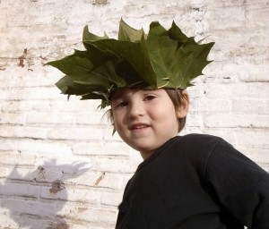

A crown just made of leafs.
Eine Krone nur aus Blättern.
¡Una corona hecha sólo de hojas!


A crown just made of leafs.
Eine Krone nur aus Blättern.
¡Una corona hecha sólo de hojas!

More than a dress First the dress and afterwards the painting in real dimension. Más que un disfraz Primero el disfraz y después la pintura en…
Read more →
De esta manera pueden cambiar los niños sus disfraces mas rápidamente. Sólo te hace falta una foto y luego pintas en una hoja de acetato disfraces…
Read more →
Sólo con un poco de cartón hemos conseguido que Noah sea un conejo! Noah as a rabbit. Just with a little piece of paper. Noah als…
Read more →
Con un rollo de papel podemos hacer una corona que le queda bien hasta al perrito. Royal Crown Out of a normal paper roll we made…
Read more →
Pig o cat: Only using cardboard´s egg- cups you can disguise yourself as diferent animals. Hannah changed her look from a pig to a cat using…
Read more →
Con cartón de huevera podemos conseguir ojos de diferentes animales, como estos que parecen de pájaro. Para conseguirlo hemos usado cartón de huevera otra vez. Mask:…
Read more →